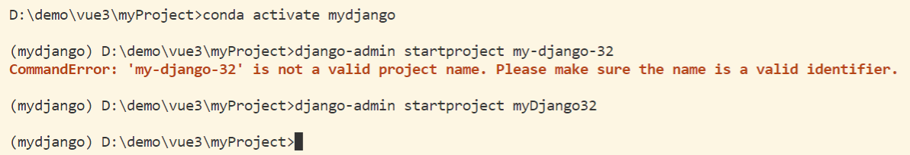
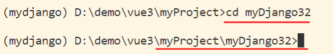
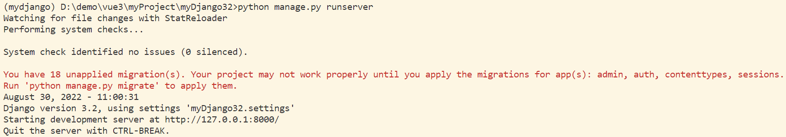
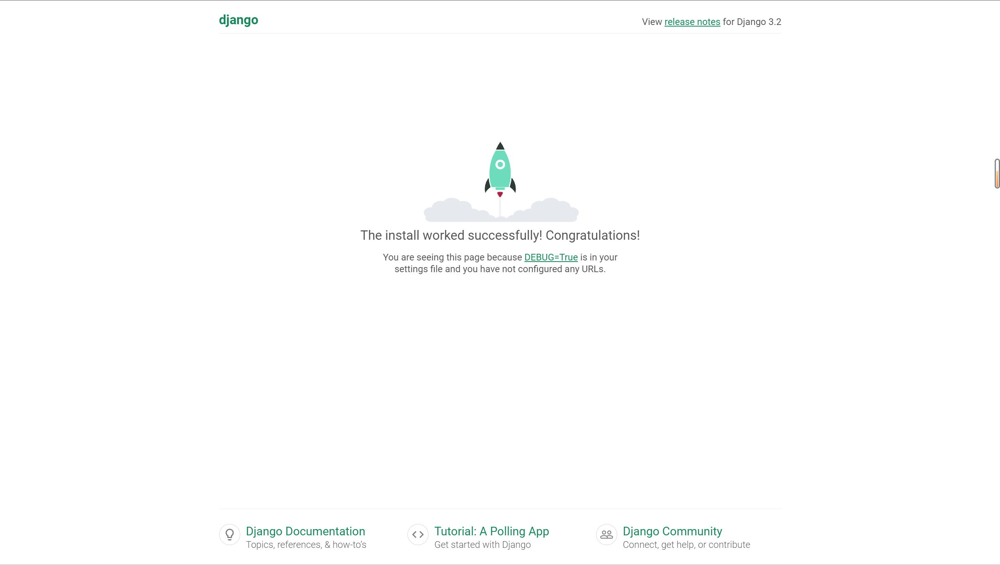
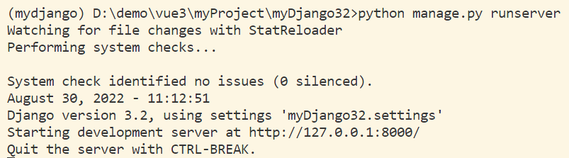
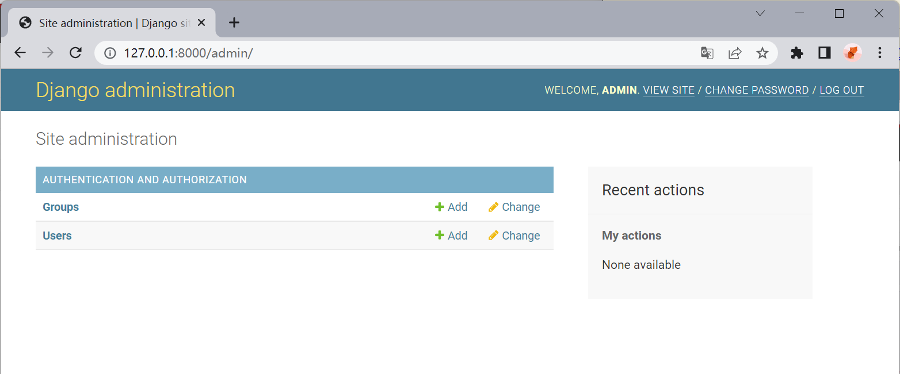
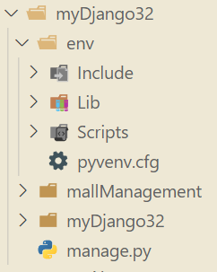
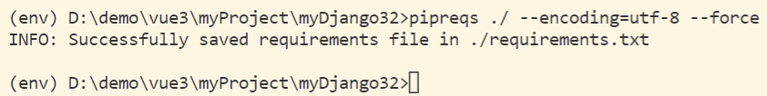
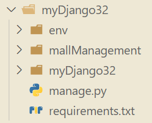
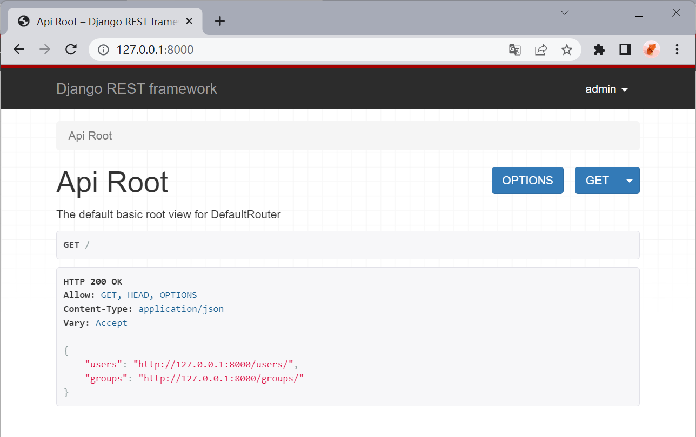

03 Django 项目实战（一）¶
本项目使用 Django3.2 版本进行开发，安装过程请参考 Django 开发环境配置 。
一、创建项目¶
1.1 创建项目¶
模板
django-admin startproject [项目名称]
创建名为 myDjango32 的 Django 项目
django-admin startproject myDjango32
【注】：
- django 创建的新项目中会有一些默认的文件和文件夹
- django 项目有命名规则，不得有空格和符号，不遵守就会报错，这里我们尽量采用驼峰命名法。

1.2 查看项目目录¶
切换到项目路径内
cd myDjango32

1.3 项目默认文件的介绍¶
查询当前目录所有子文件的树形结构
tree /f
当前项目目录结构说明
myDjango32
├─ manage.py 【项目管理,启动项目,创建app,数据库管理...】【不用改】【**经常使用**】
└─ myDjango32
├─ __init__.py 【标记本文件夹为应用目录】
├─ settings.py 【项目配置文件】【**经常修改**】
├─ urls.py 【全部的 URL 和函数对应关系】【**经常修改**】
├─ asgi.py 【默认接收网络请求】【不用改】
└─ wsgi.py 【默认接收网络请求】【不用改】
二、创建应用¶
2.1 多 APP 共存¶
- 项目
- app,用户管理【表结构、函数、HTML模板、CSS...】
- app,订单管理【表结构、函数、HTML模板、CSS...】
- app,后台管理【表结构、函数、HTML模板、CSS...】
- app,网站【表结构、函数、HTML模板、CSS...】
- app,API【表结构、函数、HTML模板、CSS...】
...
2.2 创建应用¶
模板
python manage.py startapp [APP名称]
创建名为 firstApp 的应用
python manage.py startapp mallManagement
【注】：此时一定要注意当前所在目录为项目根目录，同时也要遵守命名规则。
当前项目目录结构说明
├─ mallManagement
│ ├─ admin.py 【固定,不动】【django默认提供的admin后台管理】
│ ├─ apps.py 【固定,不动】【App启动类】
│ ├─ tests.py 【固定,不动】【单元测试】
│ ├─ models.py 【**重要**】【操作数据库】
│ ├─ views.py 【**重要**】【函数】
│ ├─ __init__.py
│ │
│ └─migrations
│ └─ __init__.py 【固定,自生成】【数据迁移后的数据库变更记录】
|
├─ manage.py
|
└─ myDjango32
├─ asgi.py
├─ settings.py
├─ urls.py 【URL -> 函数】
├─ wsgi.py
└─ __init__.py
2.3 启动项目¶
2.3.1 第一次运行¶
启动项目
python manage.py runserver
- 在终端启动项目：此时可以看到，因为未进行数据迁移操作，出现报错信息，但项目仍然成功启动。

- 项目页面：在浏览器输入 http://127.0.0.1:8000/ 即可访问当前本地运行的项目。

2.3.2 数据迁移¶
由于之前未进行数据迁移，导致项目虽然成功运行，但仍然出现报错，所以我们需要先停止项目运行，在进行数据迁移后再运行项目。
停止项目运行 (键盘)
crtl + c
数据迁移
python manage.py migrate
再次启动项目
python manage.py runserver
此时我们可以看到，错误信息已经消失。每次对数据模型 model 进行修改后，都要进行数据迁移操作，这个我们后面再详细讲解。

2.3.3 runserver 命令解析¶
在每次使用 runserver 启动项目时，都会使用 StatReloader 监视文件更改并执行系统检查，系统检查没有发现任何问题才能正式启动项目。同时，还能够查看当前项目使用的 Django 版本以及使用的 settings 设置为 myDjango32.settings 。在 http://127.0.0.1:8000/ 上启动开发服务器，使用 CTRL-BREAK 退出服务器。
三、使用 Django-admin 管理项目¶
3.1 创建超级用户¶
创建名为 admin ，邮箱为 admin@example.com 的超级管理用户，之后设置密码即可。
python manage.py createsuperuser --email admin@example.com --username admin
3.2 进入 admin 管理页¶
运行项目
python manage.py runserver
在浏览器中打开地址 http://127.0.0.1:8000/admin/ 后，输入密码可进入管理页面。

四、项目依赖包管理¶
4.1 创建项目虚拟环境¶
虽然我们使用了 conda 来管理 python 虚拟环境，但是对于不同项目，其所在的项目依赖各不相同，所以最好是对每个项目的依赖环境也进行隔离操作。
python venv 创建项目虚拟环境
python -m venv env
使用 python -m venv 命令创建名为 env 的虚拟环境，此时项目目录如下图所示。

激活虚拟环境
先确保当前所在目录为项目根目录，此时运行的操作系统为 Windows。
env\Scripts\activate
4.2 项目依赖包版本¶
参考文章：
4.2.1 安装 pipreqs¶
在
env虚拟环境中安装pipreqs
pip install pipreqs
4.2.2 收集依赖包信息¶
使用 pipreqs 在指定目录下生成名为 requirements.txt 的文件，其内存放着本项目中所用到的所有依赖包的版本信息。
收集本项目依赖包版本信息
pipreqs ./ --encoding=utf-8 --force
-
./：在当前项目根目录（即manage.py所在的同目录）生成依赖包信息文件。 -
--encoding=utf-8：使用utf-8编码。 --force：若已存在requirements.txt文件，将强行覆盖原文件。

生成后的项目目录

4.2.3 安装项目依赖¶
当项目在一个新的环境下运行时，直接执行以下命令，即可安装项目所需的依赖包。
pip install -r requirements.txt
五、配置项目的 settings.py¶
以下操作均在 myDjango32/settings.py 中进行。下面我们将逐个讲解项目中常用的配置项。
有关此文件的更多信息，请参见：
- Django 官方中文：Django 配置指南，Django 配置列表
- Django 官方英文：Django settings
5.1 修改 DATABASES 配置¶
5.1.1 系统默认配置¶
DATABASES = {
'default': {
'ENGINE': 'django.db.backends.sqlite3',
'NAME': BASE_DIR / 'db.sqlite3',
}
}
5.1.2 连接 mysql 数据库¶
参考文章：
settisng.py中的DATABASES配置
DATABASES = {
'default': {
'ENGINE': 'django.db.backends.mysql',
'HOST': '127.0.0.1', # 数据库主机
"PORT" : "3306", # 数据库端口
"USER" : "*******", # 数据库用户名
"PASSWORD" : "******", # 数据库用户密码
"NAME" : "student" # 数据库名字
}
}
与
settisng.py同目录下的__init__.py
import pymysql
pymysql.install_as_MySQLdb()
【注】：这里不写就无法正常连接 mysql 数据库。
4.1.3 再次进行数据迁移¶
终端中输入
python manage.py migrate
5.2 注册 APP¶
项目中每个创建的应用如需正常使用，都需要在 settings.py 中添加应用。
在
INSTALLED_APPS中添加应用
INSTALLED_APPS = [
...
'mallManagement.apps.MallmanagementConfig',
]
5.3 修改语言和时区¶
5.3.1 系统默认配置¶
系统默认为英语 + UTC 世界时间。
LANGUAGE_CODE = 'en-us'
TIME_ZONE = 'UTC'
5.3.2 修改语言和时区¶
现在我们修改为中文 + 上海时间。
LANGUAGE_CODE = 'zh-hans'
TIME_ZONE = 'Asia/Shanghai'
编写URL和视图函数对应关系 urls.py¶
使用 Django Rest Framework¶
-
Django Rest Framework 官网：https://www.django-rest-framework.org/
-
以下将 Django Rest Framework 简称为 DRF。
- 需要哪一个应用使用 DRF 就在哪一个应用目录下进行相关配置。
1 快速启动¶
1.1 安装 DRF¶
pip install djangorestframework
1.2 添加 serializers.py 文件¶
在项目的应用目录下，新建 serializers.py 文件，下面我们将用它来表示数据。
from django.contrib.auth.models import User, Group
from rest_framework import serializers
class UserSerializer(serializers.HyperlinkedModelSerializer):
class Meta:
model = User
fields = ['url', 'username', 'email', 'groups']
class GroupSerializer(serializers.HyperlinkedModelSerializer):
class Meta:
model = Group
fields = ['url', 'name']
1.4 Views 视图配置¶
在项目的应用目录下的 views.py 文件内添加如下内容：
【注】： serializers.py 的位置根据实际情况对引入路径进行修改。
from django.contrib.auth.models import User, Group
from rest_framework import viewsets
from rest_framework import permissions
from mallManagement.serializers import UserSerializer, GroupSerializer
class UserViewSet(viewsets.ModelViewSet):
"""
API endpoint that allows users to be viewed or edited.
"""
queryset = User.objects.all().order_by('-date_joined')
serializer_class = UserSerializer
permission_classes = [permissions.IsAuthenticated]
class GroupViewSet(viewsets.ModelViewSet):
"""
API endpoint that allows groups to be viewed or edited.
"""
queryset = Group.objects.all()
serializer_class = GroupSerializer
permission_classes = [permissions.IsAuthenticated]
1.5 Urls 路由配置¶
from django.contrib import admin
from django.urls import include, path
from rest_framework import routers
from mallManagement import views
router = routers.DefaultRouter()
router.register(r'users', views.UserViewSet)
router.register(r'groups', views.GroupViewSet)
# Wire up our API using automatic URL routing.
# Additionally, we include login URLs for the browsable API.
urlpatterns = [
path('admin/', admin.site.urls),
path('', include(router.urls)),
path('api-auth/', include('rest_framework.urls', namespace='rest_framework'))
]
1.6 配置 settings¶
添加分页
REST_FRAMEWORK = {
# 分页控制每页返回多少对象
'DEFAULT_PAGINATION_CLASS': 'rest_framework.pagination.PageNumberPagination',
'PAGE_SIZE': 10
}
注册 app
在 settings.py 的 INSTALLED_APPS 中添加 'rest_framework'
INSTALLED_APPS = [
...
'rest_framework',
]
1.7 登录页面¶
运行项目
python manage.py runserver
在浏览器中打开地址 http://127.0.0.1:8000/ 后即可进入 DRF 页面。

2¶
上一节：02 Django 官网示例